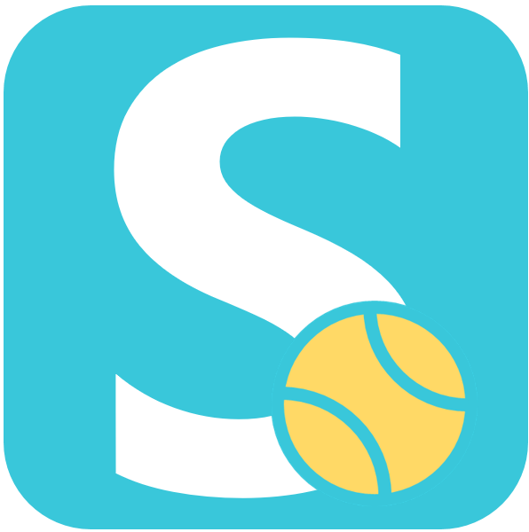

Referenciák
Néhány projekt, amelyeken az elmúlt években dolgoztunk. Az egyszerű vállalati weboldalaktól az egyedi üzleti alkalmazásokig.

SportTárs
Egyedi fejlesztésű sportközösségi platform, amely segít a felhasználóknak sportpartnereket, csapatokat és sporteseményeket találni. A rendszer célja, hogy egyszerűbbé és gyorsabbá tegye a közös sportolás megszervezését.
A projekt teljes tervezését, fejlesztését és üzemeltetését mi végezzük, beleértve a backend rendszert, az adatbázist, a felhasználói felületet, valamint a folyamatos fejlesztéseket, marketinget és új funkciók bevezetését.
Alkalmazás megtekintése →
Laboratóriumi minőségügyi rendszer digitalizálása
Egy dán–magyar tulajdonú vállalat laboratóriumának minőségirányítási rendszerét fejlesztettük és digitalizáltuk. A projekt célja az átláthatóbb működés, a folyamatok szabványosítása és az adminisztratív terhek csökkentése volt.
A munka során a teljes folyamatstruktúra kialakítása, a dokumentációs rendszer fejlesztése, valamint a minőségügyi folyamatok digitalizálása és automatizálása valósult meg modern, ISO-szemléletű megközelítéssel.
A rendszer kizárólag vállalati hálózaton érhető el!

Nemzetközi fejlesztési együttműködések
Több nemzetközi projektben is részt vettünk fejlesztőként, különböző iparágakban működő vállalkozások számára. A munkák során a modern webes technológiák mellett üzleti folyamatok és felhasználói igények megértése is fontos szerepet kapott.
Referenciáink között szerepel egy kenyai ügyfél blockchain-alapú alkalmazásának fejlesztése, valamint egy svájci partner oktatási platformjának továbbfejlesztése és új funkciókkal történő bővítése.
Új generációs oktatási platform (fejlesztés alatt)
Jelenleg egy magyarországi, modern oktatási platform fejlesztésén dolgozunk, amely célja a tanulási folyamatok digitalizálása és egy átlátható, felhasználóbarát rendszer létrehozása.
A platform várhatóan 2026 őszén kerül élesítésre, és egy skálázható, hosszú távon bővíthető digitális oktatási környezetet biztosít majd.